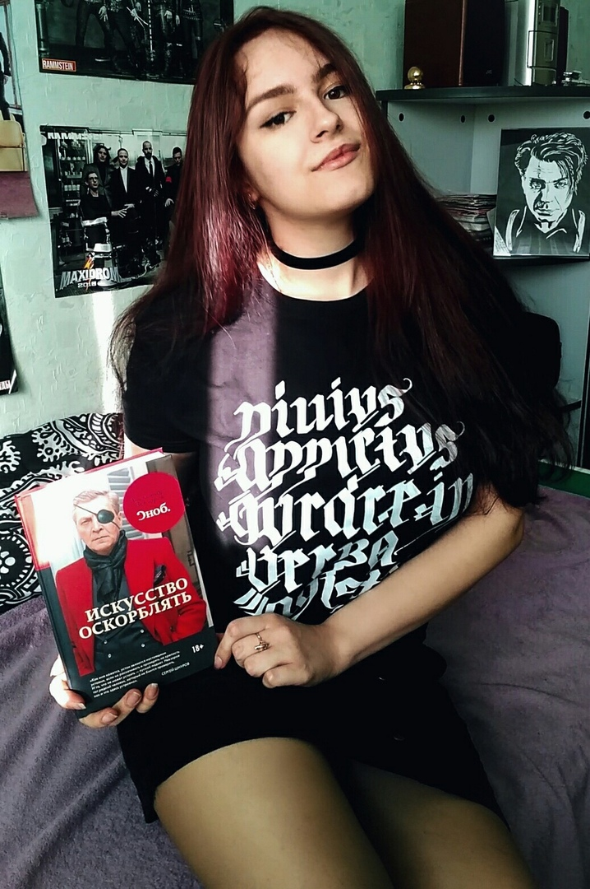

Мамсина Арина ПКС-21

Немного обо мне
Меня зовут Арина, но друзья обычно зовут меня пить пиво, либо же Орина. Я родилась и живу в городе Тольятти, с любовью я зову его Таляте. Уже второй год я продолжаю осваивать профессию православного программиста в Гуманитарном колледже имени святителя Алексия Митрополита Московского. На данной страничке я буду публиковать свои работы чтобы Михаил Викторович больше не ставил -5. Если захотите со мной связаться то ниже будут ссылки на мои соцсети